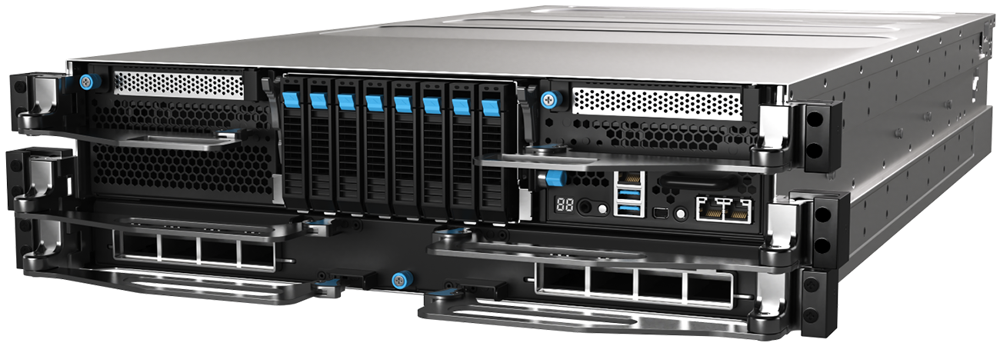
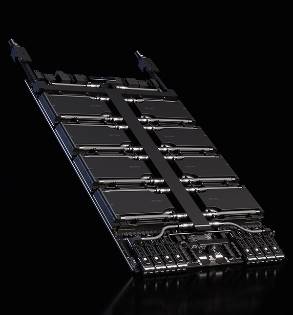
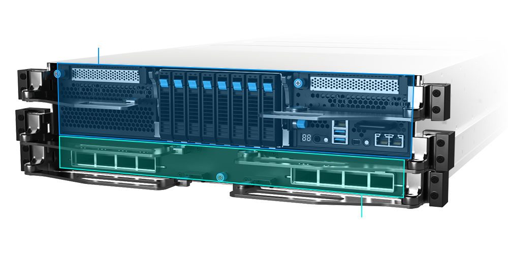
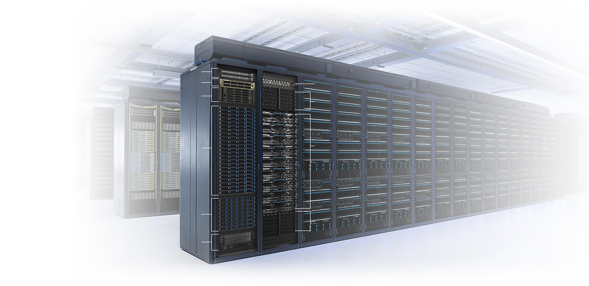
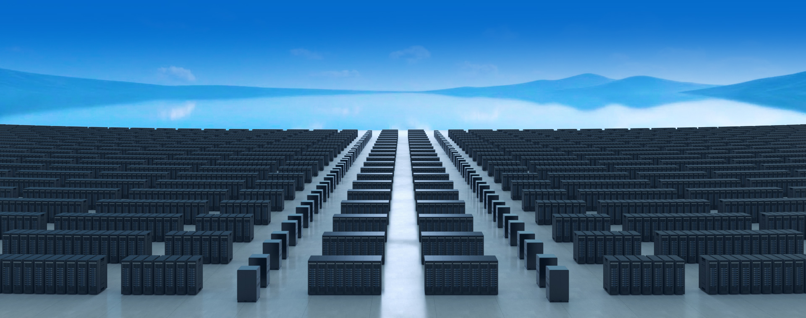

2.3kW
Extreme GPU Power


2.3kW
Extreme GPU Power
800G
Ultra-fast GPU Bandwidth
Modular GPU Sled
Built for Serviceability

Modular CPU Assembly
Independent GPU Sled

2 x North-South Networking-NVIDIA SN2201
1 x North-South Networking-NVIDIA SN5610
23 x Management Node-RS700-E12-RS4U
8 x File System-RS501A-E12-RS16U
1 x Object Storage-OJ340A-RS60
2x 3RU Power Shelf 110kW
1 x Management switch - NVIDIA SN2201
2 x 3U Power Shelves 110k
9 x ASUS XANR1I-E12LR
• 18 x Intel® Xeon® 6 processors
• 72 x NVIDIA® Rubin GPUs
2 x 3U Power Shelves 110k
